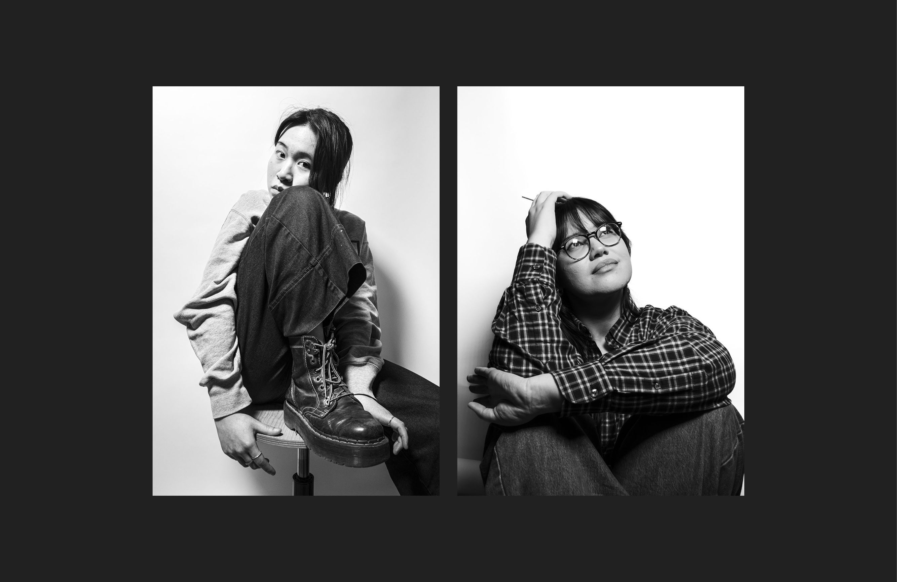

Portraits - Platon
Photographie
Technique : Photographie numérique
Réinterprétation photographique de portraits de Platon, à travers un travail de reproduction et d’appropriation de ses codes visuels pour proposer une lecture personnelle de son univers.
